Siguiente: Modelo COST231 Walfisch-Ikegami
Subir: Modelo de Walfisch-Ikegami
Anterior: Modelo de Walfisch-Ikegami
Índice General
Hasta la publicación del paper de Walfisch y
Bertoni [23] los modelos de propagación en
entornos urbanos eran ajustes a curvas con el agregado de factores
de corrección heurísticos. No se entendían los mecanismos de
propagación subyacentes, sobre todo los que tenían que ver con la
propagación sobre las edificaciones presentes. Ellos desarrollaron
un modelo que, aunque como se verá más adelante supone hipótesis a
veces demasiado restrictivas e irreales, tiene una base teórica
basada principalmente en la pérdida por difracción en múltiples
cuchillos (basado en una teoría distinta de la explicada en la
sección 4.3.1), y considera que los mecanismos de propagación
dominantes en un entorno urbano son los que se ilustran en la figura 5.3.
Figura 5.3:
Mecanismos de propagación dominantes en un entorno urbano
según Walfisch y Bertoni
|
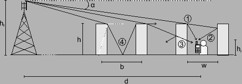
|
Basados en trabajos anteriores
[24][14][15], concluyen que los caminos
principales hacia el móvil son aquel que se propaga sobre los
edificios y difracta en el último (el camino 1 en la figura
5.3) y aquel que se refleja desde el siguiente hacia el
móvil (camino 2). Existen otros caminos para arribar al receptor
(por ejemplo los caminos 3 y 4), pero estos se consideran
despreciables en su aporte total a la potencia.
Los edificios están aleatoriamente ubicados y no están alineados
desde una calle hacia otra o con el trayecto radiobase-móvil, por lo
tanto la propagación entre edificios no produce una contribución
mayor a la señal recibida. El modelo representa los edificios como
una serie de cuchillos y toma en cuenta aquellos que, para un valor
dado de  (ver figura), penetran la primer zona de Fresnel.
La pérdida por difracción es entonces calculada mediante métodos
numéricos. Para resolver el problema de la difracción sobre varios
edificios ubicados en el camino de propagación y que tienen
influencia en la misma, en particular para valores de
pequeños, es necesario realizar una serie de aproximaciones. Algunas
de éstas son que todas las filas de edificios tienen la misma
altura, que la propagación es perpendicular a la fila de edificios y
que se considera la polarización vertical.
Para determinar el campo difractado en el nivel de la calle, es
necesario establecer el campo incidente en el techo del edificio más
próximo al móvil. Walfisch y Bertoni muestran que para un número
grande de edificios esto se puede obtener como:
(ver figura), penetran la primer zona de Fresnel.
La pérdida por difracción es entonces calculada mediante métodos
numéricos. Para resolver el problema de la difracción sobre varios
edificios ubicados en el camino de propagación y que tienen
influencia en la misma, en particular para valores de
pequeños, es necesario realizar una serie de aproximaciones. Algunas
de éstas son que todas las filas de edificios tienen la misma
altura, que la propagación es perpendicular a la fila de edificios y
que se considera la polarización vertical.
Para determinar el campo difractado en el nivel de la calle, es
necesario establecer el campo incidente en el techo del edificio más
próximo al móvil. Walfisch y Bertoni muestran que para un número
grande de edificios esto se puede obtener como:
Esta es una adición a la dependencia con 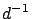 del campo
irradiado, otorgando una dependencia total con 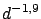. Esto
resume una dependencia de la potencia de la señal recibida con
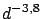, muy cercana a la de la
propagación sobre el plano de la Tierra (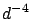) que es comúnmente utilizada
en los modelos empíricos. Es así que la pérdida total consiste en
tres factores: la pérdida entre antenas en espacio libre, la pérdida
por difracción por múltiples cuchillos hasta el edificio más cercano
al móvil y la pérdida por difracción desde este punto hasta el móvil
a la altura de la calle. Asumiendo antenas isotrópicas, el primero
de estos factores es la pérdida básica definida en el capitulo
3.1:
La ecuación (5.3) es utilizada para hallar 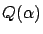,
y (expresado en radianes) está dado por:
donde
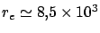 km es el radio efectivo de la
Tierra.
La pérdida de camino asociada a la difracción al nivel de la calle
depende de la existencia de edificios en la cercanía del móvil. Para
las antenas receptoras cerca del nivel de la calle, una simple
aproximación a este proceso se obtiene asumiendo que una fila de
edificios se comporta como una pantalla absorbente en el centro de
la fila. En dicho caso, la amplitud del campo en el móvil se obtiene
multiplicando el campo en el techo por el siguiente factor:
donde h es la altura de los edificios y  es
la altura de la antena del móvil como muestra la figura
5.3. Los ángulos y 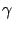 están expresados en
radianes con:
es
la altura de la antena del móvil como muestra la figura
5.3. Los ángulos y 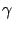 están expresados en
radianes con:
La expresión (5.6) puede simplificarse descartando
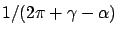 al compararlo con
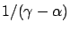 y
asumiendo que es pequeño al compararlo con .
El hecho de que haya fading en la señal recibida en el
móvil indica que la componente del campo recibido debido a las
reflexiones en los edificios próximos al móvil es de una amplitud
similar a la recibida por la difracción directa desde los techos de
los edificios próximos a él. Sin embargo, estas dos componentes
tienen fases aleatorias, entonces el valor rms (root mean
square) del campo total es la suma de los valores rms de cada
componente individual. En este caso, la componente primaria del
campo es mayor a la componente secundaria (debida a múltiples
caminos) por un factor 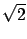. Combinando las ecuaciones
(5.4) y (5.7) con el factor , se
obtiene una expresión de la reducción del campo sobre aquel obtenido
entre las mismas antenas separadas una distancia d en
espacio libre. Expresada en dB, ésta es una expresión del exceso de
pérdida de propagación sobre la pérdida en espacio libre y está dada
por:
donde el último término en (5.8) considera la curvatura
de la Tierra y puede descartarse en la mayoría de los casos. La
influencia de la geometría de los edificios está contenida en el
término:
La pérdida total se halla sumando 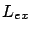 a la pérdida de
propagación en vacío
 para antenas isotrópicas.
para antenas isotrópicas.
Siguiente: Modelo COST231 Walfisch-Ikegami
Subir: Modelo de Walfisch-Ikegami
Anterior: Modelo de Walfisch-Ikegami
Índice General
SAPO